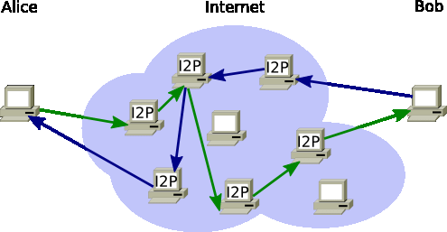

What is I2P?
I2P is a peer-to-peer anonymous network that uses Garlic Routing Garlic routing sends multiple encrypted messages (called "garlic cloves") together in one packet. This makes it harder to trace, as multiple messages are combined, and the network cannot easily distinguish which message belongs to which user. to anonymize its users (not to be confused with onion routing).
How I2P Works
I2P uses cryptography to provide various features for the tunnels it creates and the communications it carries. It uses two transport protocols, NTCP2 and SSU2, to obscure traffic. Connections are encrypted both between routers and between clients (end-to-end), and ensure forward secrecy.
The I2P network consists of peers ("routers") and unidirectional virtual tunnels for both inbound and outbound traffic. Client applications are assigned a unique cryptographic identifier called a "Destination," which allows them to send and receive messages anonymously. I2P also includes a distributed database based on a modified Kademlia DHT to securely share routing and contact information.
Use Cases
- Eepsites
- Torrents
- IRCA real-time messaging protocol created in 1988 that allows users to communicate in text-based chat rooms.
- Proxy
- ClearnetThe portion of the internet that is accessible through standard web browsers and search engines.
Eepsites
I2P hosts anonymous websites called "eepsites" that can only be accessed through the I2P network.
How to Access I2P
First, you’ll need to set up an I2P router using i2pd.
Install the transport package:
sudo apt-get install apt-transport-httpsAdd the repository:
wget -q -O - https://repo.i2pd.xyz/.help/add_repo | sudo bash -s -Install i2pd:
sudo apt-get update
sudo apt-get install i2pdThen configure /etc/i2pd/i2pd.conf. You can view my patch here and check the documentation.
Next, set up your browser (Librewolf recommended) to proxy traffic through your I2PD router:
Some starting websites (only accessible via I2P):
Torrents
I2P supports anonymous torrenting using applications like I2PSnark. It is built into many I2P router consoles.
- Launch I2PSnark from the router console (usually at
127.0.0.1:7657) - Add .torrent files or magnet links
- All torrent traffic is routed through I2P tunnels
This allows fully anonymous peer-to-peer file sharing, independent of the clearnet.
IRC
IRC is still popular on I2P. There are several public IRC servers available on the I2P network, such as:
irc.postman.i2p- Popular IRC server with multiple channelsirc.echelon.i2p- Privacy-focused discussions
You can connect to these using an IRC client (like HexChat or Irssi) configured to connect through your I2P router's proxy (usually SOCKS5 at 127.0.0.1:4447).
Proxy
I2P can be used as an outbound proxy to anonymize your traffic. This is known as an "outproxy." Unlike Tor, I2P does not have many reliable outproxies due to its design philosophy.
However, a few services allow limited access to clearnet sites through I2P. These should be used with caution as they may leak identifying information.
Example proxy address: http://false.i2p
For general browsing, stay within the I2P network for full anonymity.